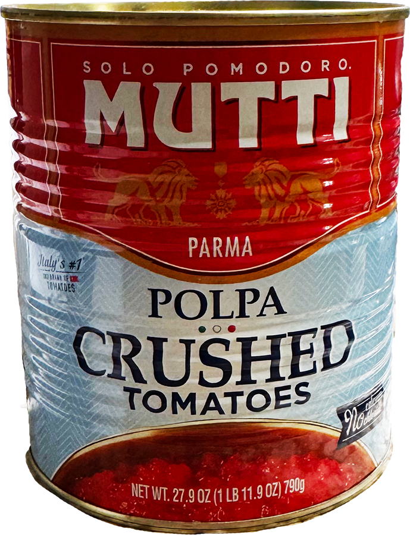
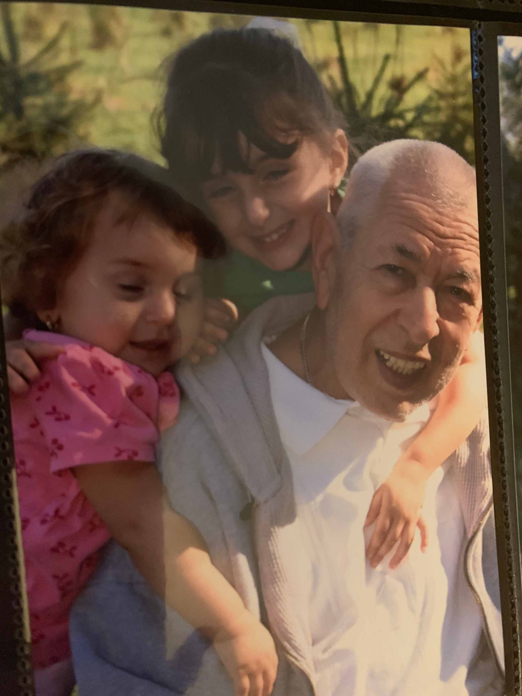

Harmonic Collection Entry 1
LASAGNA RECIPE!
Welcome! This week, my family decided to make lasagna, a meal I don't enjoy too much and one this is somewhat labor intensive. However, I've grown to appreciate it over the years, as it reminds me of fall and winter-y sundays involving homework and football (two other things I dislike). Due to the connection to my childhood and changing seasons, I enjoyed the process of cooking this, and even helped my dad assemble the lasagna. Since cooking is mostly allowing me to connect with family/loved ones that have passed, my youth, and culture, I don't measure much. Instead, of it is done by eye and with the intuition/guidance of loved ones; but here is a list of what was used this week. This week is dedicated to all my family members I have grown up cooking with, or who have taught me to cook.

INGREDIENTS: Linked here!

PROCESS
First, we prepared the sauce (this process began the night before we ate this, at approximately 10 pm). My dad blended the crushed tomatoes after sauteeing/seasoning the beef, while my grandma got to work dicing red onion and peeling garlic. These ingredients were then added into a pot and infused to create the meat sauce for layering. I then began shredding a block of mozzarella to set aside, while my dad created a mixture of whipped ricotta, parmesan, parsley, seasonings to also be refigerated for the next day's assembling.
The next morning, I helped put together the trays of pasta, alternating between sauce, noodles, and cheese mixtures (I also made a cheese-free version for my grandma who doesn't like it). Once assembled, it was placed in the oven to be eaten just in time for a Sunday dinner.

TA-DA!!


In all honesty, I'm used to my mom or grandparents cooking this meal, but my dad was craving it and felt like cooking for everyone. HIS lasagna was quite different from my mom's. Although not the BEST lasagna we've eaten, my dad reminisced over dinner about his own childhood and how he and his siblings used to urge my grandma to make this dish in a similar manner that he made it currently. He told stories of my paternal grandma's cooking process and style, explaining that he always looked forward to her pasta dishes such as this one, when he was little (However, he was a little unhappy with the end result of this recipe and didn't bother calling her to tell her that he made it, like he usually would).